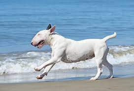

BULL TERIER INGLES

El Bull Terrier Inglés nació sin duda del
esfuerzo de James Hinks para encontrar la raza perfecta.
El irlandés dedicó su vida a cruzar muchas razas diferentes
como el English White Terrier, o el antiguo bulldog inglés
para crear un perro de peleas, contra toros, con una apariencia
elegante y bonita.